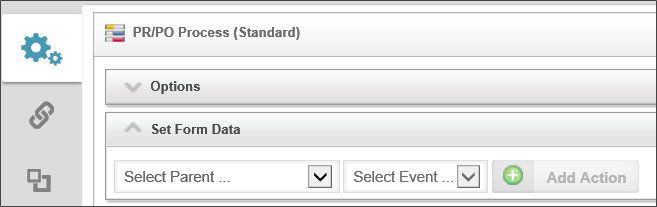
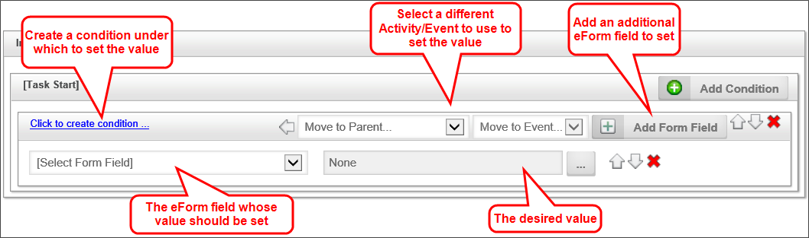
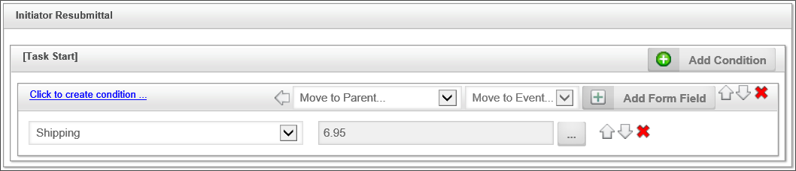

Process Timeline Definitions can be created and modified by implementers. Use the Content List entry in the Process Director navigation bar to view the Content List screen. You must have Modify permission in the folder you are viewing to be able to create a new Process Timeline Definition in that folder.
Process Timeline Definitions can be stored anywhere in the Content List, under any folder structure, though BP logix recommends you use the organizational method suggested in the Content List Folders section of the Importing/Exporting Content topic.
To configure the Process Timeline Definition settings, click on the Options section when viewing the Properties tab of the Process Timeline Definition. This will open the section to enable you to set the general Process Timeline options.
A custom icon can also be configured for this Process Timeline Definition. This icon will be displayed for all running Process Timelines for this definition (e.g. task list, Content List, Knowledge View, etc.). To change the icon used for this Process Timeline Definition, click on the  icon.
icon.
The Process Timeline Definition name and description are important because this is what a user will see when selecting a Process Timeline to run. The description should describe why and when this Process Timeline Definition should be run.
This field contains an optional name that should be used when a Process Timeline is started (i.e. instantiated). The default name of a running Process Timeline is the same name as the Process Timeline Definition. This name can contain system variables using the {SYSVAR} tag. This property allows the running Process Timeline names to contain more meaningful information (e.g. “PR Review – started by {CURR_USER}). The running Process Timeline name is re-evaluated after each Process Timeline activity completes allowing variable data (e.g. Forms field values) to be used to construct the name. Refer to the section named System Variables in this document for more information.
You can optionally link a Process Timeline to a specific Form definition in the Content List. When this is configured you can choose a form field from a dropdown list of all fields in that form instead of choosing a form then a form field.
This is an optional default email template to use when sending email notifications to users in an activity. If an email template is not specified in an activity, this default email template will be used. If no default email template is assigned, the system default email template will be used that was shipped with Process Director. For more information on email templates refer to the Email Templates section of this guide. Email Templates are stored in the Content List as a Form that is specifically configured as an Email Template Form.
Select any custom script that you would like to associate with the Timeline.
If checked, this option will copy objects in this Process Timeline package to the package’s parent. You can optionally limit the objects copied by group. The parent process may be either a Workflow or a Process Timeline.
If checked, this option will copy objects from this Process Timeline’s parent process to this Process Timeline. You can optionally limit the objects copied by group. The parent process may be either a Workflow or a Process Timeline.
If checked, this option will prevent the Timeline from being displayed in the Items I Can Run Global Knowledge View.
The Process Timeline priority is used to show participants the importance. The higher priority items are displayed first in a user’s Task List. The Process Timeline's Priority column can be resorted in the user's Task List.
This will delete the Timeline instance from the content list when the Timeline instance is complete. This is useful for Timelines that perform automated tasks for which you do not need to keep a record of once the tasks are finished.
In some cases, a user may be assigned to two or more activities in a row. The default behavior for Process Director is to immediately display the Form to the user to perform the second task once the first task is completed. This may be confusing, as the user generally expects the Form to close when a task is completed. This property enables you to change the default behavior so that, if a user is assigned to two activities in a row, the Form will not immediately reload to complete the second task. To perform the second task, the user will have to manually re-open the form from the task list.
For Process Director v5.26 and higher, this setting also enables the next task to be shown to unauthenticated users, as well.
This property enables you to display the Index, Activity, Participants, and/or the Process Timeline columns of the Process Timeline Definition.
This property enables you to display the Process Timeline in minutes, hours, days or weeks. You may also specify the default activity duration.
Process Director uses the historical task performance times for the Timeline to make predictions of future performance, such as when tasks are predicted to be completed. Over time, changes to the Timeline definition, the process, or other changes, may invalidate the historical data, and skew Process Director's predictions. Clicking the Reset Predicted Values for Instances button will erase the historical performance data, and begin recompiling it from the date it was reset.
The unique GUID, or identifier, of the Timeline definition is displayed here.
For Users of Process Director v3.75 and higher, Form data field values may be set directly from the Timeline definition. The field value can be set when a Timeline Activity task starts or ends. This is a very useful option when you want to set form data without having to open the Form. This function is especially useful for setting a form or process status, or setting action dates, without having to open the Form. In most cases, the Set Form Data tab on the Timeline Activity will replace the requirement to use a Custom Task to set form data in the Timeline.
You can configure the Set Form Data function in either the Set Form Data section of the Timeline Definition, or on the Set Form Data tab of an individual Timeline Activity. Irrespective of which method you use, the Set Form Data settings you configure will be displayed automatically in both places. Configurations can be edited in either location as well.
To set a Form field value, first ensure that you have specified a form to associate with the Process Timeline, via the Form for Timeline property in the Options section of the Timeline Definition. Next, in the Set Form Data section of the Timeline definition or in the Set Form Data tab of an individual Timeline Activity, select the activity and activity event for which you'd like to set the value. The two activity events that appear as usable events are Task Start and Task End. An additional option for the event, No Event, can be used as a placeholder. The Set Form Data action will NOT occur if the event is set to No Event.
 For Process Director v4.03 and higher, these selections are available as separate dropdown controls. Prior versions present them as a single dropdown control.
For Process Director v4.03 and higher, these selections are available as separate dropdown controls. Prior versions present them as a single dropdown control.

For each Timeline Activity, you have the choice to select the activity, or to specify that the value must be set when the activity begins or ends. Once you select the task or specific event that should set the Form's data, the selected item will appear in the Set Form Data section.

As the example above shows, you now have a variety of settings you can apply to set the Form field's value.
You can change the order of conditions, or fields by clicking the up or down arrow icons, or you can delete an item by clicking the red "X" icon.
In the example below, the generic Initial Approval activity was selected, selecting the Task Start as the event. When the Activity runs, the Shipping field is set to a cost of $6.95.
